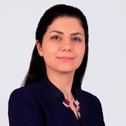
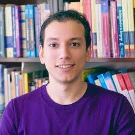
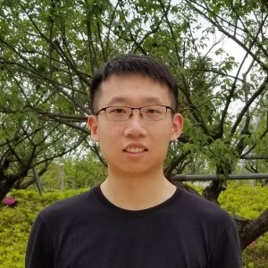

Narges Armanfard

Dr. Armanfard is currently an assistant professor in the Department of Electrical and Computer Engineering at McGill University in Montreal, Canada. She obtained her PhD degree from McMaster University, Canada in 2016. The focus of her PhD research was on developing effective machine learning algorithms for data classification. In this vein, she proposed and developed the novel concept of localized feature selection (LFS) and classification. The LFS method demonstrates superior performance for classification in complex and high dimensional sample spaces. She also developed a novel machine learning based system for automatic and continuous coma patient assessment and outcome prediction.
Matlab code for the LFS method is available here: https://github.com/armanfn/LFS
Publications:
[1] Narges Armanfard, James P. Reilly, Majid Komeili, “Local Feature Selection for Data Classification”, IEEE Trans. Pattern Analysis and Machine Intelligence, Vol. 38, No. 6, June 2016, pp. 1217-1227.
[2] Narges Armanfard, James P. Reilly, Majid Komeili, “Logistic Localized Modeling of the Sample Space for Feature Selection and Classification”, IEEE Trans. Neural Networks and Learning Systems, Vol. 29, No. 5, May 2018, pp. 1396-1413 DOI: 10.1109/TNNLS.2017.2676101.
[3] Narges Armanfard, Majid Komeili, James P. Reilly, John F. Connolly, “Automatic and Continuous Detection of Mismatch Negativity: Application to Coma Outcome Prediction”, IEEE Journal of Biomedical and Health Informatics, Vol. 23, No. 4, April, 2019 pp. 1794 - 1804 DOI: 10.1109 JBHI.2018.2877738.
Phil Chrapka
Dr Phil Chrapka finished his PhD in 2018 and is currently Director of Data Science at Trybe, Inc.
Research Accomplishments - A Novel Beamformer for EEG: Phil developed a novel form of beamformer for use with the EEG. The method shows significantly improved performance over the more conventional beamformers in the presence of head model errors.
P. Chrapka, H. de Bruin, and J. Reilly, “Estimating Neural Sources Using a Worst-Case Robust Adaptive Beamforming Approach”, Biomedical Signal Processing and Control, (Elsevier), Vol 52, pp. 330-340. July, 2019. DOI 10.1016/j.bspc.2019.04.021
Wavelet-based Muscle Artifact Noise Reduction for rTMS Evoked Potentials: Transcranial magnetic stimulation (TMS) has recently emerged as a successful treatment for major depressive disorder. A novel wavelet de-artifacting procedure was developed that suppresses the magnetic artifact and allows adjustment of the stimulus parameters for maximum effect.
Philip Chrapka, Hubert de Bruin, Gary Hasey and Jim Reilly, “Wavelet-based Muscle Artifact Noise Reduction for Short Latency rTMS Evoked Potentials”, IEEE Transactions on Neural Systems and Rehabilitation Engineering, Vol 27, No. 7, 2019, pp. 1449-1457, DOI 10.1109/TNSRE.2019.2908951
Adaptive Brain Source Connectivity Estimation Using Partial Directed Coherences: A novel method for extracting partial directed coherences (PDCs) from the EEG was developed for tracking brain connectivity. These connectivity patterns are then applied as features in machine learning algorithms.
Rober Boshra

Rober is presently a post-doctoral fellow working in Prof. Sabine Kastner’s lab at Princeton University.
Rober's primary research topic pertains to local brain potentials, recorded from the human cortex (electrocorticography), and their relation to both scalp event-related potentials and high frequency brain oscillations. Rober is interested in the analysis of such recorded signals in conjunction with state-of-the-art machine learning and digital signal processing techniques (primarily machine learning) to elucidate facets of consciousness, cognition, and language processing.
Omar Nassif

Omar Nassif completed his Master’s degree in the Dept. of Electrical and Computer Engineering in September, 2020. He was co-supervised by Prof. Jim Reilly in the Dept. of Electrical and Computer Engineering, and Prof. Vickie Galea, School of Rehabilitation Science. He used machine learning methods to characterize premature infant motor movement for assessment of potential neurological deficits. He extracted features from video sequences of infant movements and then used supervised and unsupervised machine learning methods to analyze the data. In the unsupervised case, he demonstrated that infant movement patterns cluster into distinct groups that roughly correspond to infant age group. In the supervised case, he showed that pathological cases classified into age groups that were lower than the chronological age of the infant. The method therefore provides a clinical facility for identifying neurological deficit in infants.
Zhongda Zhang

Zhongda completed his baccalaureate in Electrical and Biomedical Engineering from McMaster University in 2020. He is currently working with Profs. Connolly and Reilly on various methods for brain connectivity estimation, for use with diagnosing and assessing various types of disorders of consciousness.
zhanz73@mcmaster.ca